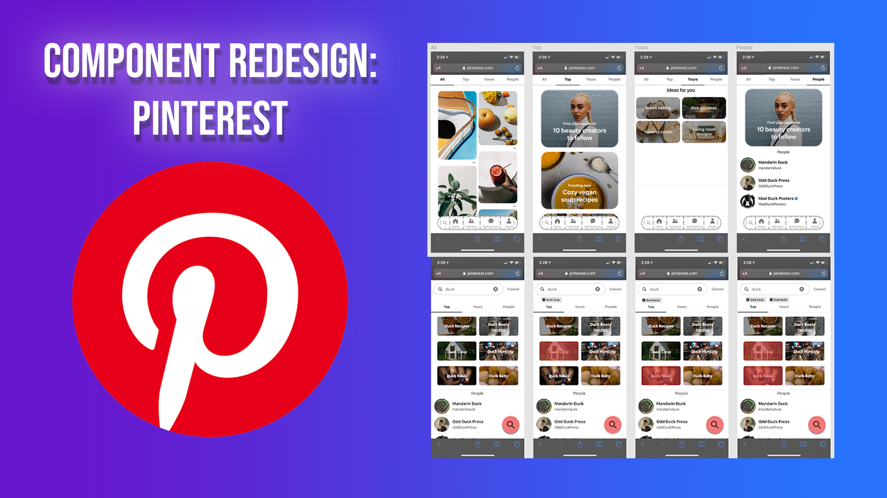

Pinterest Redesign
Team:
Ryan Wey, Dan Tran, Osvaldo Vasquez-lara, Henry Pham-Tran
Role:
UX Designer & User Researcher
Timeframe:
Nov-Dec 2020
Overview/Background
Pinterest is a unique social media app that shows images to preview content of other sites. It is used to find inspiration for ideas, such as finding tacky fashion trends or getting ideas to draw something. The feed layout is visually appealing and useful because it helps users quickly glance at ideas that they want. Once they find an idea they like, they can save it as a “pin” and save it into a “board”. This concept enables users to keep a collection of inspirations and ideas that can be referred to later for work, hobbies, or other things.
We chose Pinterest because we liked how different Pinterest was to other social media apps and wanted to challenge ourselves in doing a redesign of a popular app.
In one course of interaction design, I worked with three other people to redesign the search component of Pinterest. In this project, we learned how to create prototypes that utilized a redesigned component as an attempt to solve user problems we noticed from the original app with the analysis of user testing and competitors. We redesigned the search component because we noticed that users ignored some of the features and that there are some features that are not needed. Although we did changes, it ultimately came back to users preferring the original component.
I was primarily responsible for the component redesign and competitor analysis. I was also primarily responsible for the user testing plan for the prototypes. Additionally, I also interviewed and took notes for some of the users I also chimed in ideas for the sketches and made sure the high-fidelity prototypes were functional.
Disclaimer: We do not work with Pinterest nor are we associated with them. We did this for a school project.
User Testing - Pinterest
In the user testing process, we found five users, who are acquaintances of our group and are primarily college students. We had a good mix of users in regards to familiarity with Pinterest. A majority of our users had minimal interaction with Pinterest, while one of them was familiar with it. For every user we tested, we had an observer and a guide. Our guide asks the users questions to answer and gives tasks for users to do. Our observer takes notes on any confusion that a user might have while they are doing tasks.
We made a group of questions and tasks in order for users to navigate Pinterest’s mobile site. Some of these questions and tasks included:
- A person’s familiarity with the app (e.g. Do you use Pinterest?)
- Using the app (e.g. Can you get ideas for drawing anything you’re interested in?)
- Impression of Pinterest (e.g. What is the purpose of pinterest?)
Based on our five users, we found that users didn’t have that much trouble navigating the website. Users had no trouble going to where they needed to go and endless scrolling didn’t frustrate them. Most users knew how to create boards and saved pins.
However, there were also problems that users came across. First, they were unfamiliar with some features because they were hard to find. Some users couldn’t easily figure out how to create notes, edit pins, or move boards. Second, the overall layout can be overwhelming and can lead to information overload. Ultimately, it means some features are getting ignored. Some users ignored the tabs and mostly used search for their needs. The user familiar with the app used the “For you” tab for inspiration. In the search component, all of the users exclusively used the search bar to look up things and ignored many of its other features.
Component Redesign
There were problems in many areas, so finding a single area to redesign was a dilemma. Changing the visual layout and any core user interactions would be too ambitious. Instead, we decided to redesign by augmenting the search section of the website. The biggest problem is that the search feature isn’t being fully utilized, with some features being ignored.
For example, none of the users noticed the drop-down to the right of the search bar to limit the search. This is because the home page doesn’t include this feature. We believe there should be consistency in the design (either having the feature removed altogether or including it in the home page), as inconsistent design was a point of confusion for our users. As a result, some users could miss out the filtering option, which allows users the option to search for only pins, only pinners, or only boards. Its filtering option is weak. For example, users may want to search for popular pins or the latest pins for what they’re looking for. However, Pinterest doesn’t have that feature. Thus, there should also be a feature for users to search with some sorting options (e.g. sort by latest pin saved) and other filters (e.g. filter to pins uploaded this month), especially since they already have a filters option. Improved filtering might help users better find content they like better and save users time.
Some users also ignore the suggestions in the search component because there are other options they can use to get suggestions (“For you” page, “Today” page, “Following” page, “Notifications” page, etc.). Additionally, most users wouldn’t bother to scroll down in the search component because at first glance, users don’t even know that it is scrollable with additional content. We also noticed that users don’t use suggestions when we asked them to search up anything they wanted. Most thought of a topic they want to look for and searched it up. If users wanted to narrow their search, they would click on the tabs below the search bar if it’s something they want to narrow. Otherwise, they would type out what they want to narrow. Based on this, we consider it a good feature to have search suggestions, but we believe the search section is likely the last thing users will be looking for when there are other, more accessible options that provide suggested content. By removing search suggestions irrelevant to the search, we can use the space more efficiently whether it’s making some sections bigger or adding new features.
There is also an inconsistency with the search window in terms of not searching anything and typing anything. Typing anything on the search bar dismisses the suggestions and recent searches. It also shortens the search window (can’t scroll down). The size inconsistency could cause users to be confused sometimes. To keep it consistent, it is recommended that when there’s anything in the search bar, it keeps the same size as it was before it had anything typed in. With that extra space, it would be interesting to see an image preview of whatever a user wants to search for. Sometimes a user may not be sure what they’re searching for, so having an image preview or a consistent layout could help a user look for what they need faster.
Competitor Analysis
Instagram has a unique way of showing trending searches. In the image below, the search bar tells the user to search for “jam session”. However, it changes to a different trending search every few seconds. Pinterest doesn’t show trending searches, and in the search component, a user has to scroll down far enough in the search window to find the Popular section. Since Pinterest is used to get inspiration and ideas, this idea of blinking random ideas based on user preference could potentially be a good feature to use in the search component. Outside of its unique way, it also shows relevant topics and searches in the Top section.
As shown in the left image, Instagram also doesn’t give search suggestions while typing something out. Instead, it makes the user press enter once they type the keyword and see what the best results are, based on who they follow or what people tend to pick. They want to make the user sure before clicking on anything. In this area, the user can either scroll down endlessly in the Top section or do it in other sections. If a user wants to find a specific tag, they go to the tag section, then scroll down until they find a tag that is relevant to them. If a user clicks on the top result of the search results in the left image, they will be in the right image. The problem with the right image is that the user can click on the suggested keywords to narrow a search, but the user can’t edit or add their own keywords themselves
Google Images
Google Images’ search component is used to its full potential. The simplicity of the search and the usefulness of it feel complete in a sense. As shown in the left image below, Google Images only provides recent searches because it understands that its purpose is to help users find images of keywords they want to search for. They know a user would either search for something new or go back to an old search if needed. If a user wanted to see images of anything, they would research beforehand then search those images in Google Images. In the right image below, the section below the tabs shows thumbnails and suggestions to help narrow down a search in order to help a user find the image they’re looking for faster. It also has horizontal scrolling, which doesn’t ruin the experience of looking at the images below. These suggestions are all based on relevant user searches. The horizontal scrolling eventually ends, but it is long enough to get what users typically need. If they want to narrow the search, they would type more keywords in the search results.
Compared to Pinterest, there are also more filtering options that are more relevant to the user. Sometimes, a user wants to see the latest images. Sometimes, a user wants to only see high quality images. Sometimes, a user wants to use the image that is open use, so they don’t run to copyright issues. These filters are used to narrow a search even further outside from suggestions.
Reddit’s search component fixes some of the problems that Pinterest has. One, they make it as simple as possible while catering to enough of the users. When the search bar is empty, users are prompted to search things up or to look at trending. With Pinterest, there’s too much information going on, like “For You” or “Popular in Pinterest”. Reddit keeps it simple by using only “Trending today.” The use of the search is also a lot different than in Pinterest. In Reddit, people tend to use the search option to either find a specific subreddit (a topic they’re interested in) or to search up trending topics. The point of Reddit is to keep up to date with specific topics that you’re interested in, and the search component fully complies with that.
Additionally, when searching something, Reddit suggests subreddits. Users can quickly see the icon and the number of members. The equivalent of this for Pinterest would be boards. Users can quickly gauge which of the subreddits is relevant to them and click on it. If a user doesn’t want subreddits, they can click “Results for” or press enter for other information. If Pinterest has a feature that shows popularity for an item in the search bar, it would greatly impact user experience because some pin/boards that are popular are more likely going to give better ideas than ones that aren’t popular.
Reddit’s search component also includes a “Sort By” option. This helps a lot when users want to find things outside of the default option (“relevancy”). For example, users in the UCSD subreddit might want to find the top post in the whole Math 183 situation to understand more about it. As mentioned in the Component Redesign, Pinterest would greatly benefit from a “Sort By” option because users can find inspirations from popular things, trending things, latest things, and even the oldest things.
Sketches
These sketches are drawn by Ryan Wey. I pitched in my ideas from my component redesign and competitor analysis.
Sketch 1: Top Search Bar, with Image Previews as Selectable Filters
We aimed to change image previews in search; previously they were one-way, click-through links to access an algorithmically generated feed. Users tend not to use these, yet many wanted more pictures to be visible and improved search filtering. Making the image previews into ‘categories’ that users can select to refine a search is a fair compromise. ‘Search first’ users can still search their desired topics easily. However, more content from any one category of suggested content is more visible in this design. Users might find new content categories while searching, as opposed to having to deliberately look for it in their homepage.
Sketch 2: Top Search Bar, with Image Previews as Selectable Filters
This sketch mimics the placement of a floating overlay, like on mobile. However, this time it is only the search bar. When the user searches, the current page/category will respond to the search. Tapping the title will change categories. Swiping up will go into search details.
Sketch 3: Search as Separate Tab
This sketch considered that mobile users are likely to use taller phones, and become frustrated at having to reach to the top of the screen to access features. Therefore, the top part of a screen should be used for reading. Search is now at the bottom. It can be a separate screen that is accessed on tap. It could also be accessed via a left/right swipe: this is similar to the Google Feed on Android devices and the ‘Today’ screen on iOS. On phones with notches, moving buttons down has another benefit: they are no longer obscured and use the space around the notch well. The area to the left/right of a notch can be used for infrequent accessed buttons like ‘Settings’.
Sketch 4: Search as/alongside Homepage
For this sketch, we considered the design from shopping, travel, and some image board/forum sites. These have the search bar across most screens as a core interaction, encouraging users to use the search. This allows augmenting it with other content, so that search-preferring and feed-preferring users are not necessarily separated nor alienated.
Prototypes
Our group had to make two prototypes, based on what we noticed from our user testing, competitor analysis, and sketches. Both prototypes were designed to keep Pinterest’s aesthetic and design choices, while focusing on key differences in how users might approach the search component. Prototype 1 focuses on making the filtering more intuitive and easier to access. We removed the Pinterest jargon and made it so users can filter out more extensively. Prototype 2 also focused on making the search component more easily accessible by moving many icons and functions around to make it more intuitive for the user. For example, we moved the search component to be a toggleable button with the rest of the shortcuts.
Prototype 1
Demo
Prototype 2
Demo
User Testing - Prototypes
Most of the user testing in this is similar to the first one, but we got four new users from college students we know with different exposures to Pinterest(2 for each prototype). In order to figure out if our prototype was effective, we made each user use the search component of one prototype and Pinterest’s search component. We gauged their opinions and also the speed of which they used the search bar, especially for the task when including two filters. If a user had trouble using the prototype or the actual website itself, then we took note of that.
We made a group of questions and tasks in order to gauge this difference. Some of these questions and tasks included:
- A person’s familiarity with the app (e.g. Do you use Pinterest?)
- Using the redesigned search component from the prototypes and Pinterest’s search component
- Impressions of the prototype (e.g. Did you notice anything different in this prototype?)
Most users in our second user testing prefer the original search component as a result of the bugs from the prototype and the simplicity of the original. However, there were also strengths involved with our prototypes. Most users enjoy the ability to stack filters/tags on top of each other. In the original, users had to type out each filter in quotations in order to filter the way that it was in the prototype (shown in the image below).In prototype 2, there were quality of life changes that made users not move their hands as much as the original.
Conclusion
It was interesting to dissect a popular app’s component and redesign it based on user testing and competitive analysis. We made sure everyone did their part and met the deadlines we set ourselves to do. Although most of the users prefer the original design, there were changes that users enjoyed and needed. It also made my group realize that users don’t need to utilize the full functionality of the search component if the core functionality serves them well enough. Despite the short time, it was an eye-opening experience. For our prototypes, it was important for our group to create design decisions that we believe would benefit the user.
In the end, we recommend that most of Pinterest’s design can remain the same. However, things can be reorganized to create a more streamlined user experience. Pinterest could also benefit from additional features that other websites have done in order to give more options for users.